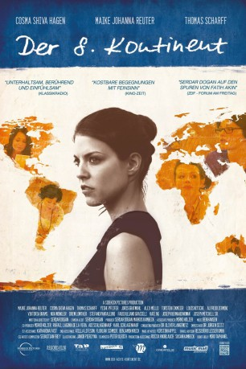

#6440 Der 8. Kontinent
 
 IMDB-Wertung: 8.0 / 10
IMDB-Wertung: 8.0 / 10  Metascore: 0
Metascore: 0 
Nach dem plötzlichen Tod ihrer Mutter Hannah ist die 22-jährige Architekturstudentin Lena am Boden zerstört. Zwar ist Lena einst nach einem heftigen Streit zu Hause ausgezogen und hat seitdem kein Wort mehr mit ihren Eltern gewechselt, doch als sie von ihrem Vater die traurige Nachricht und obendrein einige Briefe ihrer Mutter bekommt, die diese nie abgeschickt hat, bereut sie, die Chance auf Aussöhnung verpasst zu haben. In den an sie adressierten Zeilen erfährt Lena, dass sich Hannah nichts sehnlicher gewünscht hat, als gemeinsam mit ihrer Tochter die Welt zu bereisen. Daher beschließt diese nun kurzerhand, den Lebenstraum der Verstorbenen selbst zu erfüllen und begibt sich, stets begleitet von den Worten ihrer Mutter, auf eine Weltreise – in nur wenigen Wochen will sie den Globus umrunden, von Rom über Rio nach Hongkong und Sydney bis zur Antarktis.
Jahr: 2015
Dauer: 97 Minuten
FSK: 6
Land: Deutschland Studio: Sidekick PicturesTonspuren:
Untertitel:
Auflösung: 1080p (1920x864) Größe: 3338 MB
Genre: Drama, Familie
Regisseur: Serdar Dogan
Drehbuch: Serdar Dogan
Soundtrack:
Darsteller:
- Thomas Scharff als Vater Berthold
 Cosma Shiva Hagen als Mutter Hannah
Cosma Shiva Hagen als Mutter Hannah- Nadine Knobloch als Bedienung
- Joseph Mitchell als Biko
- Yeshe Pfeifer als Isabelle
- Maike Johanna Reuter als Lena Keller
- Viktoria Brams als Sophie
- Joris Gratwohl als Robert
- Carlo Cepelli als Taxidriver
- Torsten Eikmeier als Professor Schneider
- Fabio Uliano Grasseli als Fabio
- Drew Lowther als Gangster
- Markus Löchner als Richard
- Giorgia Margini als Francesca
- Alex Mello als Ricardo
- Mary Muhsal als Stefanie
- Kate Ng als Lau Yeung
- Louis-Nicolai Nitsche als Christoph
- Joseph Bernard Nowak als Jon
- Raphael Nybl als Martin
- Stefano Pantaleoni als Stefano
- Carlotta Siebje als Carlotta
- Mak Sifu als Kungfu-Master
- Noa Winkler als Irene Heppner
- Alfredo Zermini als Sven
Datei: X:\2015(A-F)\8. Kontinent, Der (2015, FSK6, 1920x864).mkv seit 21.06.2017
Festplatte: HD 2015(A-Z)
 Es gibt insgesamt 143 Filme in der Gruppe '2015(A-F)'
Es gibt insgesamt 143 Filme in der Gruppe '2015(A-F)'